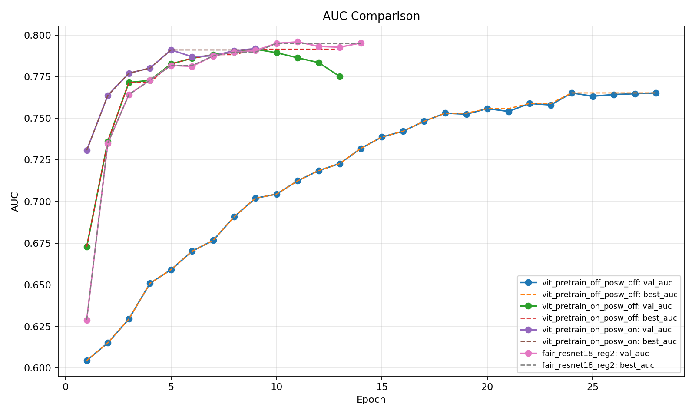
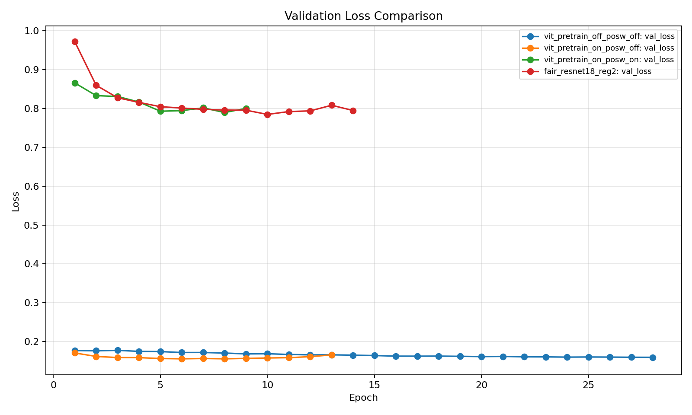

核心结论
- 最优模型：fair_resnet18_reg2，测试 AUC 0.7942
- ViT 预训练显著提升性能：0.7623 → 0.7890
- pos_weight 提升召回倾向，但会增加误检（假阳性）
- ResNet18 在医学小样本任务中泛化更稳定、更鲁棒
全局对比

AUC 对比

验证损失对比
阅读建议（面试官视角）
- 先看 AUC 对比，快速定位最优模型
- 查看训练曲线，判断是否过拟合
- Grad-CAM 检查模型是否关注肺野病灶区域
- 错误样例分析漏检 / 过检模式与类别不平衡影响